Both GitHub themes are simulated here. The SVGs are self-contained: no webfonts, no scripts, no remote assets.
assets/stage/hero.svg
assets/stage/ticker.svg
assets/stage/about.svg
assets/stage/h-targets.svg
assets/stage/target-0.svg
assets/stage/target-1.svg
assets/stage/target-2.svg
assets/stage/target-3.svg
assets/stage/h-signal.svg
assets/stage/signal-0.svg
assets/stage/h-contact.svg
assets/stage/contact-github.svg
assets/stage/contact-linkedin.svg
assets/stage/contact-youtube.svg
assets/stage/contact-portfolio.svg
